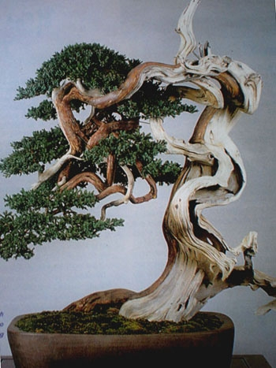

BẢNG GIÁ SỈ CÂY CẢNH
Đời sống ngày một hiện đại, nhu cầu về vật chất và tinh thần được chú trọng nhiều hơn. Sự thô cứng của bê tông hóa đôi lúc khiến bạn choáng ngợp; thêm vào đó là những áp lực luôn diễn ra song hành hằng ngày. Tìm về với thiên nhiên là điều nhiều người mong muốn. Chính vì thế, việc trang trí không gian sống bằng cây xanh được chú trọng nhiều hơn. Thời gian qua, chúng tôi nhận được vô vàng những tin nhắn, những cuộc gọi hỏi về giá sỉ các sản phẩm cây hoa kiểng? Hỏi về quy cách cây…. Để trả lời những câu hỏi đó, hôm nay chúng tôi xin liêt kê chi tiết trong

| STT | Tên cây | Quy cách/ Ghi chú | ĐVT | Đơn giá(VNĐ) |
|---|---|---|---|---|
| 1 | Cẩm tú cầu lớn | 25-30cm | Chậu | 158.000 |
| 2 | Cẩm tú cầu trung | 20-25cm | Chậu | 132.000 |
| 3 | Cúc chậu | 28-30cm | Chậu | 55.000 |
| 4 | Dạ yên thảo | Giỏ/td> | 43.000 | |
| 5 | Hoa anh thảo trung | Chậu | 80.000 | |
| 6 | Hoa chậu bông bụp | Chậu | 68.00 | |
| 7 | Hoa chậu đồng tiền | Chậu | 78.000 | |
| 8 | Hồng môn | 2 tép/chậu | Chậu | 145.000 |
| 9 | Sống đời mini đơn | Chậu | 29.000 | |
| 10 | Sống đời mini kép | Chậu | 34.000 | |
| 11 | Sống đời trung đơn | Chậu | 68.000 | |
| 12 | Sống đời trung kép | Chậu | 78.009 |